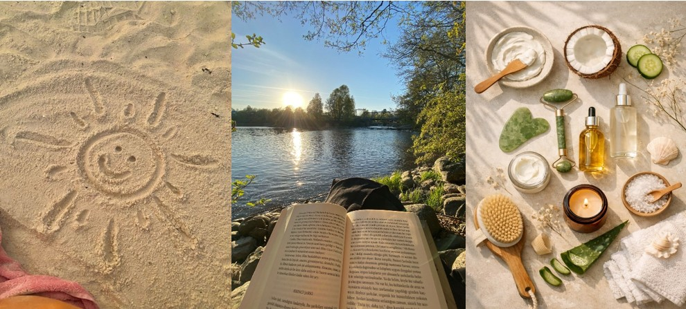

Dopamine Menu
Your cozy safe-care app that will help you replace doomscrolling with intentional activities.

Starters
Enjoyable activities that will help you avoid doomscrolling on your phone
Mains
Activities that require at least 30 min
Sides
Enjoyable activities that can be done at the same time as other tasks
Dessert
Mindful activities that can be enjoyed in moderation
DopaMenu is your favorite cozy self-care app designed to help you avoid doomscrolling by replacing it with thoughtful, relaxing and intentional activities throughout the day.
Some of the core features include: customizable menu, weekly activity tracker, and a reward system for each completed activity.